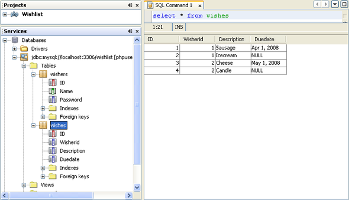

Apache NetBeans
Apache NetBeansJust released!
レッスン1b: Oracleデータベース表の作成
| This tutorial needs a review. You can open a JIRA issue, or edit it in GitHub following these contribution guidelines. |
このレッスンでは、ウィッシュ・リスト・アプリケーションの開発での最後の準備手順である、テスト・データを持つサンプルのデータベースの作成を示します。このチュートリアルの手順を完了するには、ウィッシャのデータを格納するデータベースが必要です。NetBeans IDEでは、IDEのインタフェースを使用して、これらのアクティビティをすべて実行できます。 始める前に、PHPを使用するCRUDアプリケーションの作成 - メイン・ページにあるチュートリアルの要件を確認してください。
現在のドキュメントは、PHP向けのNetBeans IDEでのCRUDアプリケーションの作成というPHPチュートリアルの一部です。
データベースのユーザーの作成
この手順では、最初にユーザーを作成し、次にそのユーザーとして表を作成します。
ユーザーを作成するには、Oracleのツールを使用するか、またはNetBeans IDEからデータベースに接続してIDEのSQLエディタを使用します。NetBeans 7.0は、現在ベータ版または開発ビルドとしてのみ利用できますが、Oracleデータベースへの接続が改善されています。NetBeans IDEからOracleデータベースに接続し、そのデータベース内でユーザーを作成する方法を学習するには、Oracleデータベースへの接続のチュートリアルを参照してください。
選択したツールを使用して、次のユーザーを作成します。
| ユーザー名 | phpuser |
|---|---|
パスワード |
phpuserpw |
システム権限 |
CREATE TABLE |
CREATE VIEW |
CREATE SEQUENCE |
CREATE TRIGGER |
ロール(Oracle Database 10.x) |
CONNECT |
RESOURCE |
このユーザーを作成するためのSQLコマンド・セットの例を次に示します。これらのコマンドでは、データベースに表領域USERSおよびTEMPが存在することが前提になります。
drop user phpuser cascade;
create user phpuser identified by phpuserpw;
grant connect, resource to phpuser;
alter user phpuser default tablespace users temporary tablespace temp account unlock;サンプル・データベースの構造の設計
必要なデータをすべて準備して格納するには、次の2つの表が必要です。
-
登録済ユーザーの名前とパスワードを格納するwishers表
-
ウィッシュの説明を格納するwishes表

wishers表には次の3つのフィールドがあります。
-
ID (id) - ウィッシャの一意のID。このフィールドは主キーとして使用されます。
-
name
-
password
wishes表には次の4つのフィールドがあります。
-
ID (id) - ウィッシュの一意のID。このフィールドは主キーとして使用されます。
-
ウィッシャのID (wisher_id) - ウィッシュが属するウィッシャのID。このフィールドは外部キーとして使用されます。
-
description
-
期日(due_date) - ウィッシュがリクエストされる日付
表はウィッシャのIDを介して関連付けられます。wishesのdue_date以外のフィールドは、すべて必須です。
Oracleデータベース・スキーマの作成
-
作成したユーザーとしてデータベースにログインします。
NetBeans IDE経由で接続する場合、新しいユーザーの名前とパスワードを使用して接続を作成します。ユーザーと同じ名前を持つスキーマを選択するようにします。(Oracleデータベースへの接続チュートリアルのOracleデータベースへの接続の確立の項を参照。)
-
wishers表を作成するには、次のSQL問合せを実行します。
create table wishers (id number not null,name varchar2(50) unique not null, password varchar2(50) not null, constraint wishers_pk primary key(id));-
wishes表を作成するには、次のSQL問合せを実行します。wishesとwisherを関連付けるために、外部キーを作成します。
create table wishes (id number not null, wisher_id number not null,description varchar2(255) not null, due_date date, constraint wishes_pk primary key(id), constraint wishes_fk1 foreign key(wisher_id) references wishers(id));-
新しい表がデータベースに追加されたことを確認します。NetBeans IDEを使用してデータベースに接続している場合、「サービス」ウィンドウのjdbc:oracle:thin:@localhost:1521:XE [PHPUSERのphpuser]接続ノードに移動します。新しい表が「表」ノードに一覧表示されます。(それらが表示されない場合、接続を右クリックして「リフレッシュ」を選択します。)

注意: Oracleデータベース表を作成するための一連のSQLコマンドは、ここからダウンロードできます。
ID値を増分するための順序およびトリガーの追加
Oracleデータベースでは、値を増分するために順序を指定する必要があります。表に新しいメンバーが追加されたときに値を増分するには、トリガーを追加します。
-
wishers表の順序を追加するには、次のSQLコマンドを実行します。
create sequence wishers_id_seq start with 1 increment by 1;-
新しいウィッシャを追加したときにwishers表のID列で順序をトリガーするには、次のSQLコマンドを実行します。
create or replace trigger wishers_insert
before insert on wishers
for each row
begin
select wishers_id_seq.nextval into :new.id from dual;
end;
/-
wishes表の順序を追加します。
create sequence wishes_id_seq start with 1 increment by 1;-
新しいウィッシュを追加したときにwishes表のID列で順序を実行するためのトリガーを追加します。
create or replace trigger wishes_insert
before insert on wishes
for each row
begin
select wishes_id_seq.nextval into :new.id from dual;
end;
/注意: 順序およびトリガーを含む、Oracleデータベース表を作成するための一連のSQLコマンドは、ここからダウンロードできます。
テスト・データの入力
アプリケーションをテストするには、データベース内にいくつかのデータが必要です。以降の例では、2つのウィッシャと4つのウィッシュを追加する方法を示します。
-
Tomという名前でパスワードが「tomcat」のウィッシャを追加します。
insert into wishers (name, password) values ('Tom','tomcat');-
Jerryという名前でパスワードが「jerrymouse」のウィッシャを追加します。
insert into wishers (name, password) values ('Jerry', 'jerrymouse');commit;-
ウィッシュを追加します。
insert into wishes (wisher_id, description, due_date) values (1, 'Sausage', to_date('2008-04-01', 'YYYY-MM-DD'));
insert into wishes (wisher_id, description) values (1, 'Icecream');insert into wishes (wisher_id, description, due_date) values (2, 'Cheese', to_date('2008-05-01', 'YYYY-MM-DD'));
insert into wishes (wisher_id, description)values (2, 'Candle');
commit;-
テスト・データを追加したことを確認します。NetBeans IDEを使用してテスト・データを表示する場合、関連する表でマウスの右ボタンをクリックし、コンテキスト・メニューから「データを表示」を選択します。

データベースの原則とデザイン・パターンの一般的な知識については、チュートリアルhttp://www.tekstenuitleg.net/en/articles/database_design_tutorial/1を確認してください。
Oracleの CREATE TABLE 文の構文の詳細は、http://download.oracle.com/docs/cd/B19306_01/server.102/b14200/statements_7002.htmを参照してください。
注意: Oracleデータベース表を作成するための一連のSQLコマンドは、ここからダウンロードできます。
次の手順
users@php.netbeans.orgメーリング・リストに登録することによって、NetBeans IDE PHP開発機能に関するご意見やご提案を送信したり、サポートを受けたり、最新の開発情報を入手したりできます。